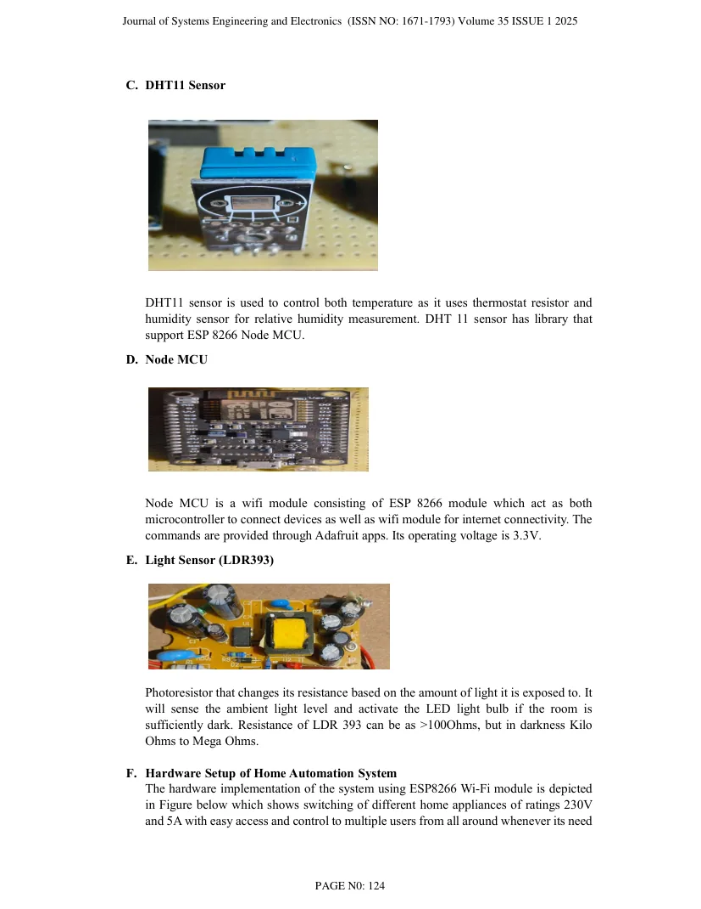
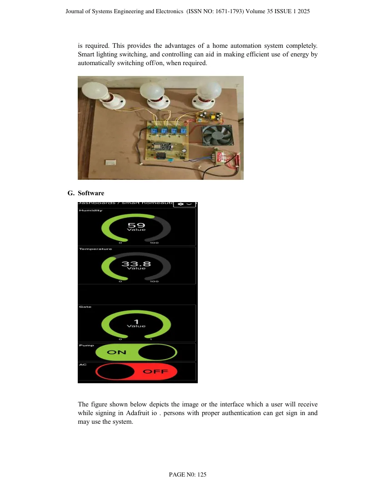

Abstract
Advancements in automation are significantly enhancing human life. Automated systems are now favoured over non-automated ones. The Internet's rise has made IoT an essential technology, playing a crucial role in daily and educational tasks. This paper presents a Smart Home Automation system using the ESP8266 Wi-Fi module. The system integrates hardware and software interfaces, allowing multiple users to control home appliances via smartphones, tablets, and laptops. Admin-managed access ensures security. This scalable system also supports additional appliances and home security, provided they are within Wi-Fi coverage. Overall, it exemplifies efficient and user-friendly home automation
Transcribed from the uploaded publication PDF; wording follows the paper.
Research scope
The paper presents a smart-home automation system using an ESP8266 Wi-Fi module. Its described approach combines hardware and software interfaces to let multiple users control appliances through smartphones, tablets and laptops, with administrator-managed access.
Methodology described in the paper
The paper positions the system as a scalable Wi-Fi-based appliance-control solution. It identifies ESP8266 as the connectivity module and discusses remote appliance control and home-security extension within Wi-Fi coverage.
Key reported details
ESP8266 · Wi-Fi appliance control
Figures, layouts & results
These are page extracts from the actual uploaded research paper, not illustrative or generated diagrams. Open the full PDF for the original captions, scales and context.

